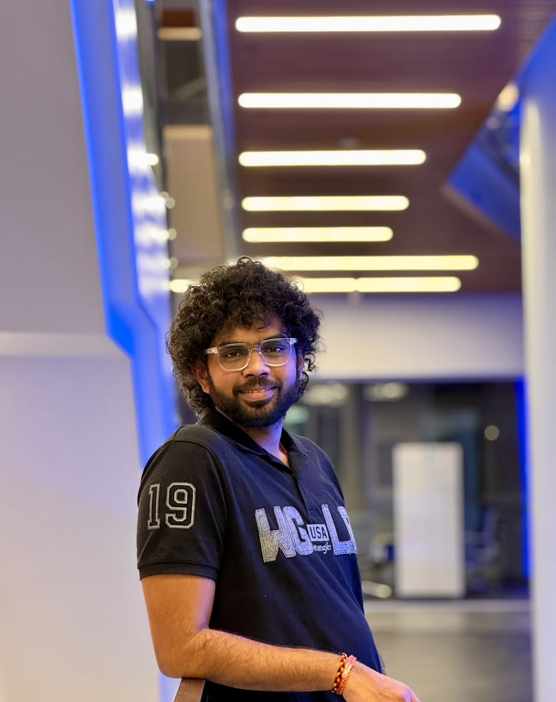

01 / NLP
ICD10TEXT → CODE
CLINICAL LANGUAGENATURAL LANGUAGE PROCESSING
Automated ICD-10 Coding
Clinical text classification, CodiEsp data, label alignment, and multi-label prediction.

COMPUTER SCIENCE · UMBC · PH.D. STUDENT
I’m Vivek Anupindi, a Computer Science Ph.D. student at the University of Maryland, Baltimore County. My interests sit at the intersection of clinical NLP, machine learning for healthcare, predictive modeling, and reliable data systems.
THE RESEARCH LIBRARY
A selection of research directions and projects connecting machine learning, health data, and dependable systems.
NATURAL LANGUAGE PROCESSING
Clinical text classification, CodiEsp data, label alignment, and multi-label prediction.
HEALTHCARE AI
Investigating temporal models for short-term glucose forecasting using contextual signals.
DATA ENGINEERING
ETL architecture, orchestration, data quality, and dependable ML-ready pipelines.
HEALTHCARE ANALYTICS
Exploratory and statistical analysis of workload, behavioral, emotional, and specialty trends.
HEALTH DATA SYSTEMS
A Python project tracking health measurements, flagging rule-based anomalies, and generating reports.
MY APPROACH
I’m interested in the full path from messy, real-world data to models and systems that can support careful, evidence-based decisions—from clinical text processing to time-series prediction and reliable data pipelines.
More about my background →WRITING & SCHOLARSHIP
Publication status is shown as listed in my current CV.
International Journal for Research in Applied Science & Engineering Technology (IJRASET), vol. 13, no. XII, 2025.
DOI: 10.22214/ijraset.2025.76293
Comparative study of machine-learning approaches for multi-label diagnostic-code classification using Spanish clinical text.
Research manuscript on cloud-native data engineering patterns, as listed in the current CV.
CAREER TIMELINE
Research, teaching, and engineering experience across academic and industry settings.
TEACHING
University of Maryland, Baltimore County
DATA ENGINEERING
Remote, USA
DATA ENGINEERING
Bangalore, India
BACKGROUND
A foundation in computer science and information systems, applied to healthcare and data-intensive problems.
I work across the boundary between data systems and applied machine learning, with a particular interest in healthcare data and the challenges of turning complex information into reliable predictions and insights.
My background combines professional data engineering with graduate study and independent research. I’m interested in methods that are not only technically effective, but also carefully evaluated and useful in realistic settings.
University of Maryland, Baltimore County · Baltimore, MD
Saint Louis University · GPA 4.0 / 4.0
B. V. Raju Institute of Technology (JNTU Hyderabad) · GPA 9.0 / 10.0
TOOLS OF THE TRADE
Grouped by how I use them, rather than subjective skill percentages.
Python, SQL, R, Bash, scikit-learn, TensorFlow, PyTorch, NLP, transformers, time-series modeling.
Apache Airflow, dbt, Kafka, DataStage, Azure Data Factory, ETL design, data quality, data lineage.
Snowflake, AWS, Azure, IBM Cloud, Kubernetes, OpenShift, Docker, Cloud Pak for Data.
Power BI, Tableau, exploratory data analysis, statistical analysis, data visualization.
CERTIFICATIONS · AS LISTED IN CV
Microsoft Certified: Power BI Data Analyst · Databricks Certified Data Engineer · Databricks Certified Generative AI · Databricks Fundamentals · Microsoft Azure AI Fundamentals · Microsoft Azure Fundamentals · IBM Cloud Core · IBM Python
BEYOND THE PROJECTS
Selected coursework, service, recognition, and professional activities from my CV.
HONORS & AWARDS
SERVICE & COMMUNITY
Led reading-group activities focused on computer science research and technical literature with the Srinivasa Ramanujan Computer Science Education Undergraduate Research Group.
COURSEWORK
Machine Learning, Artificial Intelligence, Big Data Analytics, Cloud Computing, Research Methods, Health Informatics, and Advanced Databases.
PROFESSIONAL ACTIVITIES
Participant, DFI–India Engineering Conference (2022) and Indian National Academy of Engineering events.